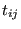
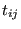
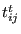
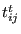
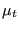
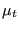
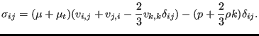
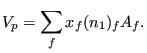
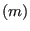

Next: Transient term Up: The Finite Volume Method Previous: General approach for solving Contents
The conservation principles are of utmost importance in fluid dynamics. They lead to sets of linear equations the solution of which yields the fields we are looking for (velocity, pressure, temperature...). The conservation of momentum can be written in the following component form (in spatial carthesian coordinates) [19]:
Since (definition of the total derivative):
 |
(530) |
and (conservation of mass) [19]
 |
(531) |
one can write
 |
(532) |
and consequently Equation (529) amounts to:
since the Cauchy stress
 can be written as the viscous stress
 minus the hydrostatic pressure
can be written as the viscous stress
 minus the hydrostatic pressure  :
:
| (534) |
The viscous stress can be written as the sum of the laminar viscous
stress  and the turbulent viscous stress  satisfying [67]
and the turbulent viscous stress  satisfying [67]
( is the turbulent kinetic energy and  is the turbulent viscosity) leading to
is the turbulent kinetic energy and  is the turbulent viscosity) leading to
|  | (537) |
Integrating Equation (533) over an element one obtains (using Gauss' theorem):
where  is the volume of the element and
is the volume of the element and  the external surface (which is
the sum of the area of all external faces of the element). The area of a face
is calculated by considering it as a 2-dimensional finite element and
calculating the Jacobian vector at the center (1-point integration). The
volume is obtained by replacing
the external surface (which is
the sum of the area of all external faces of the element). The area of a face
is calculated by considering it as a 2-dimensional finite element and
calculating the Jacobian vector at the center (1-point integration). The
volume is obtained by replacing  by the coordinate
by the coordinate  and
and  by
by  in
Equation (503):
in
Equation (503):
|  | (539) |
Now, turning to Equation (538) each term is considered in detail for
element P and iteration  of increment  .
.